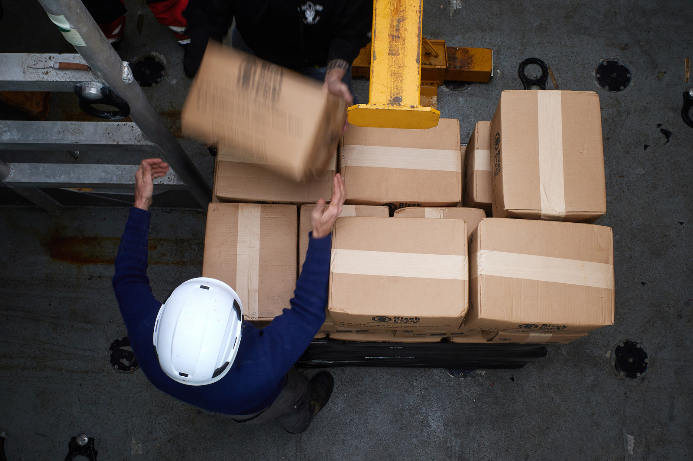
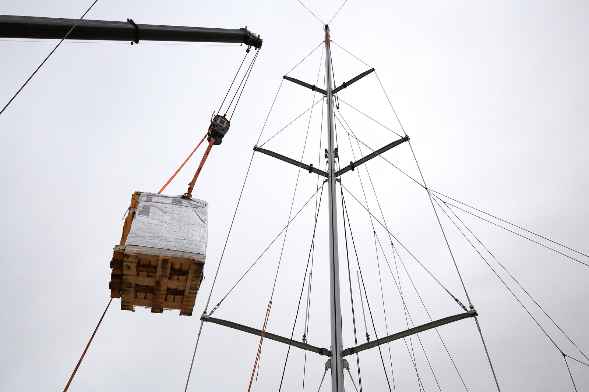
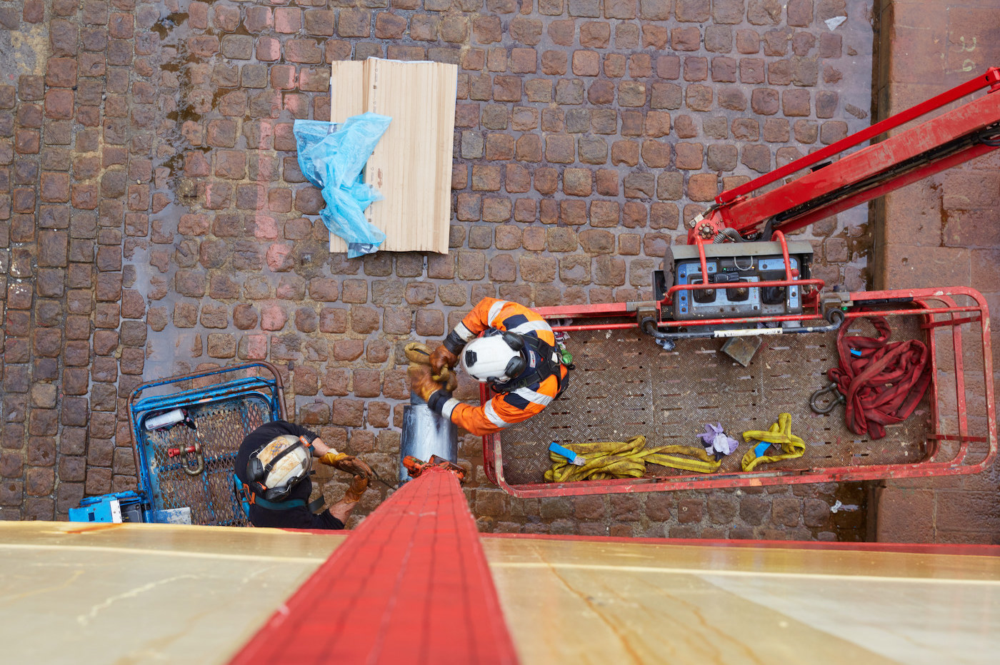

/// 7 Mar 2026 ///
Photographe industriel en Vendée — Reportages d'usines et de chantiers

La Vendée est l’un des départements les plus industriels des Pays de la Loire. Agroalimentaire (Fleury Michon, Boulangère, Laiterie de Montaigu), plasturgie, construction navale, logistique portuaire, énergie offshore — le tissu industriel vendéen et ligérien est dense, divers, et largement méconnu des médias nationaux.
Or, ces entreprises ont des besoins photographiques importants : dossiers de presse, appels d’offres, communication institutionnelle, recrutement, rapports annuels. La photographie industrielle est une spécialité qui demande une expérience spécifique — et des résultats très différents d’un reportage d’entreprise classique.

Ce que couvre un reportage industriel
Lignes de production et process Documenter une ligne de fabrication ou un process de transformation, c’est montrer à la fois la maîtrise technique, l’échelle des installations et la précision des opérations. Ces images servent les supports commerciaux, les certifications qualité (ISO, BRC, IFS) et les dossiers de financement.
Portraits d’opérateurs et d’ingénieurs Les visages humains au coeur d’un environnement industriel créent un contraste puissant et valorisent les métiers souvent invisibles de votre entreprise. Ces portraits renforcent la marque employeur dans un contexte de tension sur les recrutements industriels.
Chantiers et grands ouvrages Navires en construction, bâtiments industriels, infrastructures portuaires, installations énergétiques : la photo de chantier documente l’avancement des travaux pour les parties prenantes (maîtrise d’ouvrage, investisseurs, collectivités) et constitue une archive précieuse à la livraison.
Milieux maritimes et portuaires La façade atlantique vendéenne et ligérienne génère une activité industrielle et logistique importante. J’ai réalisé des reportages pour des acteurs du secteur maritime à Nantes-Saint-Nazaire et en Vendée.


Les contraintes spécifiques du milieu industriel
La photographie industrielle impose des contraintes absentes d’un reportage d’entreprise classique :
- Sécurité : port des EPI (casque, chaussures de sécurité, lunettes), connaissance des zones à risques, respect des protocoles site
- Luminosité : les halles industrielles sont rarement bien éclairées. Je travaille avec un éclairage portable adapté aux grands volumes, sans perturber la production
- Accès et coordination : toute intervention en milieu industriel se prépare avec les responsables HSE et de production — délais d’autorisation, plan de prévention, permis de photographier
- Angles et perspectives : les machines et installations imposent leurs contraintes. Trouver le cadre qui montre à la fois l’échelle et le détail demande de l’expérience
Mon approche
Ma formation de photojournaliste me donne une capacité à m’adapter rapidement à des environnements contraints — bruit, chaleur, lumière difficile, accès limité dans le temps. Je suis habitué à produire des images exploitables dans des conditions qui ne sont pas celles d’un studio.
J’ai réalisé des reportages industriels pour des chantiers navals en Loire-Atlantique, des opérateurs portuaires, des entreprises agroalimentaires vendéennes et des acteurs de la logistique. Certains de ces reportages ont été publiés dans la presse professionnelle et nationale.

Ce que je livre
- Fichiers haute résolution retouchés et légendés (métadonnées IPTC complètes)
- Versions optimisées pour le web et pour l’impression grand format
- Livraison sous une semaine, dossier Dropbox ou WeTransfer
Zone d’intervention : Vendée (85), Loire-Atlantique (44), Pays de la Loire, Grand Ouest.
Voir mes reportages d’entreprise — En savoir plus sur mes missions en Vendée — Demander un devis